카피덱 v2-KO 적용: 히어로 "당신은 거울 호수입니다." · CTA "내 패턴 읽기" · 배지 "거울 호수 壬 / 깊은 심목 甲 / 정오 표식 丙" · "결과는 단 하나의 카드로 남습니다." · "당신의 리딩은 여덟 글자로 시작됩니다." EN 대비 폰트를 한국어 지원 Google Fonts로 전체 교체.
데이터-에디토리얼 01·03·09·14브루탈-프린트 02·05·11·13코리안-퀴에트 06·12·16·20시스템-그리드 07·15·18·19웜-에디토리얼 04·08·10·17
01
Noto Sans KR + IBM Plex Mono
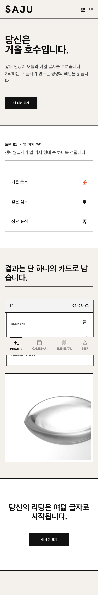
02
Black Han Sans + IBM Plex Mono
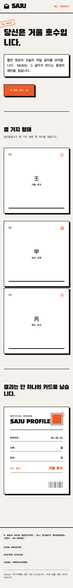
03
IBM Plex Sans KR + Mono
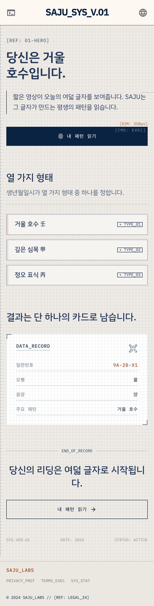
04
Nanum Myeongjo + Noto Sans KR
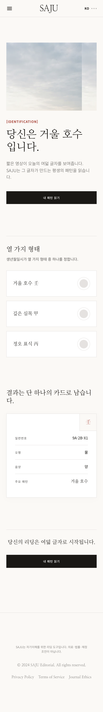
05
Black Han Sans + Noto Sans KR
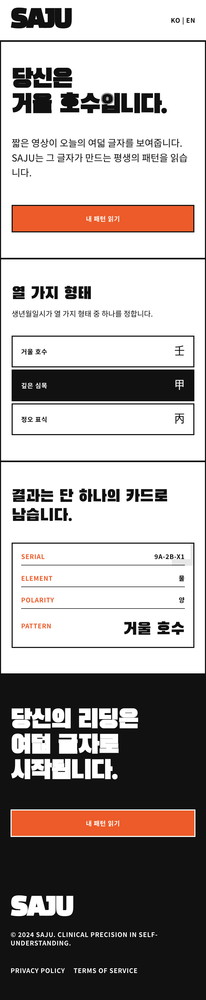
06
Gowun Batang + Noto Sans KR
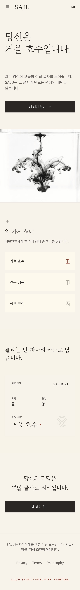
07
Noto Sans KR + IBM Plex Mono
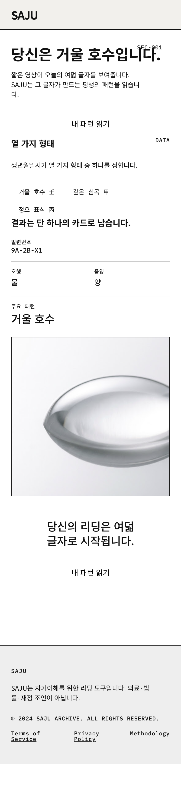
08
Song Myung + Noto Sans KR
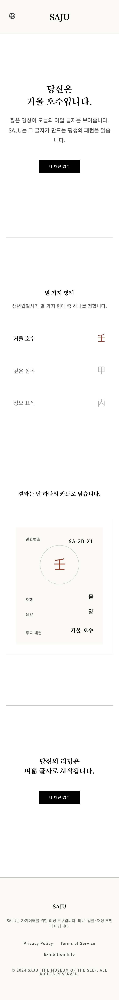
09
IBM Plex Mono + Noto Sans KR
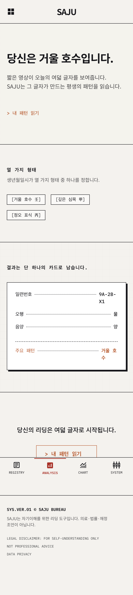
10
Gowun Dodum + Noto Sans KR
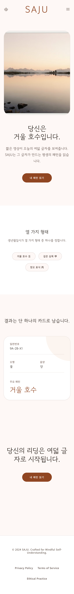
11
Do Hyeon + Noto Sans KR
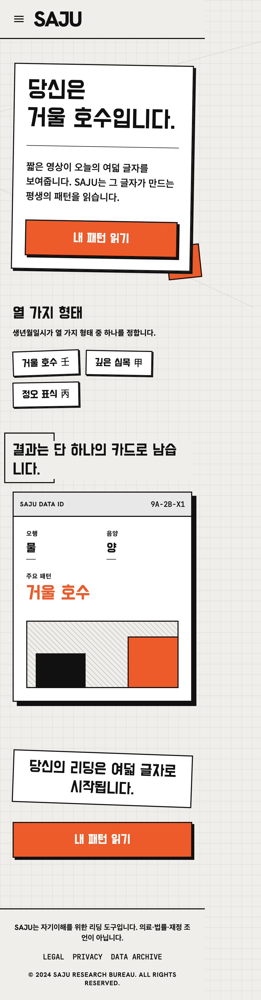
12
Hahmlet + Noto Sans KR
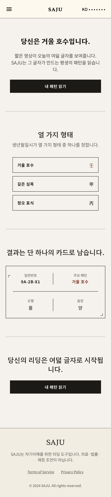
13
Sunflower + IBM Plex Mono
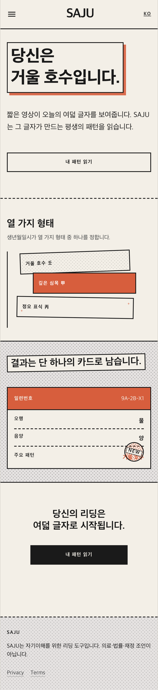
14
IBM Plex Sans KR + Mono
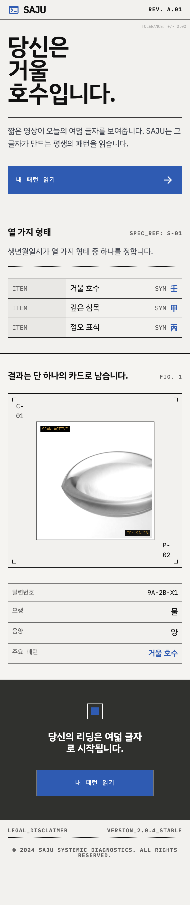
16
IBM Plex Mono + Noto Sans KR
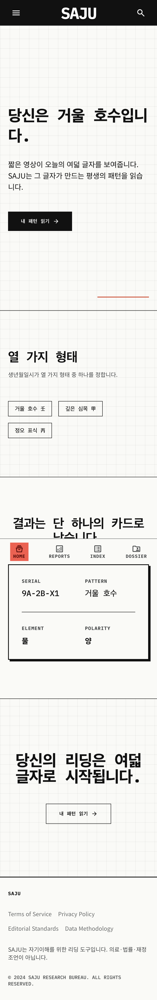
17
Nanum Myeongjo + Noto Sans KR
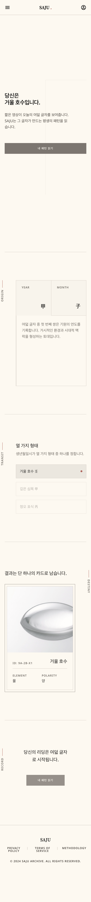
18
Gowun Batang + Noto Sans KR
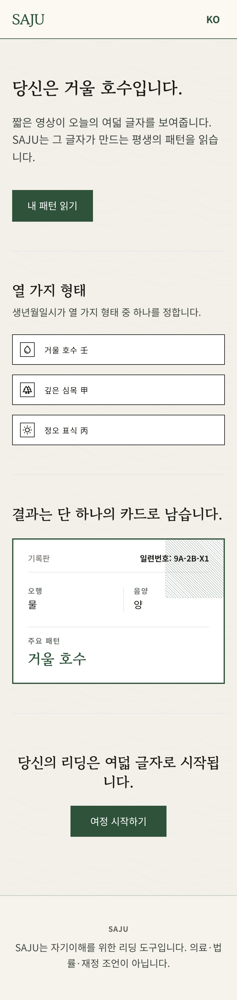
19
Gothic A1 + IBM Plex Mono
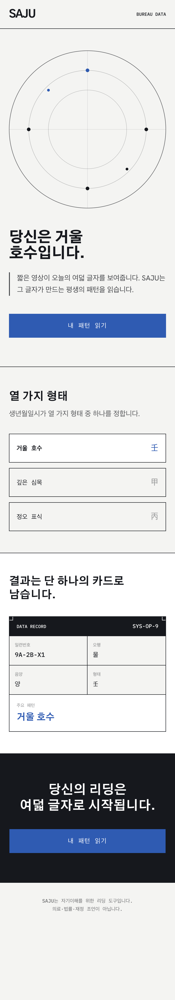
20
Nanum Myeongjo + Gowun Dodum
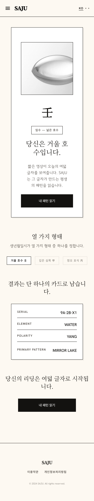
각 시안: Stitch generate_screen_from_text (한국어 프롬프트, 카피덱 v2-KO) → htmlCode 다운로드 → 개행 복원 → HTTP 서빙 → Tailwind JIT 14초 → 390px@2x 네이티브 렌더 · EN(v1)은 taste-20/ 에 보존, KO(v2)는 taste-20-ko/ 로 별도 관리